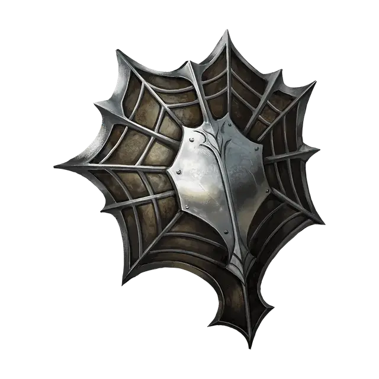

Щит притягивания снарядов
Shield of Missile Attraction
Доспех (Щит), редкий (требуется настройка)

Рекомендованная стоимость 4 000 ЗМ
Пока вы носите этот Щит, вы обладаете Сопротивлением урону от атак, совершаемых с Дальнобойным оружием.
Проклятие. Этот Щит проклят. Если вы настраиваетесь на него, на вас действует проклятие, пока на вас не будет применено Снятие проклятия или аналогичная магия. Снимание щита не оканчивает это проклятие на вас. Каждый раз, когда атака Дальнобойным оружием нацеливается на существо в пределах 10 футов от вас, из-за проклятия вы становитесь целью этой атаки вместо изначальной цели.